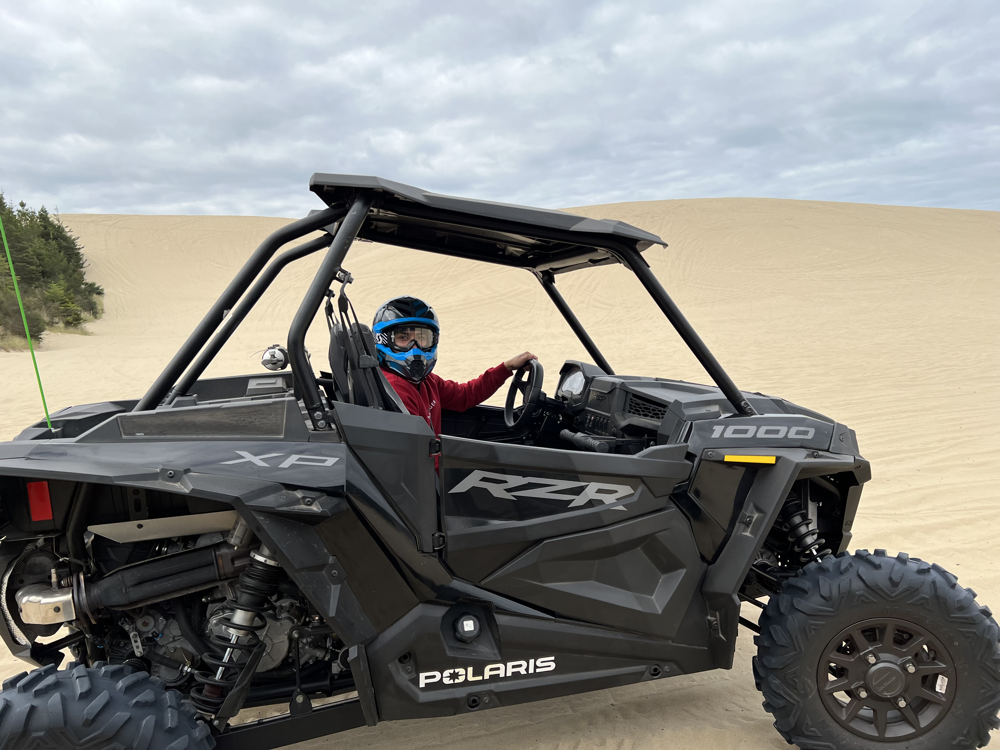

JoeyKiesau
Opening up my eyes and self to nature and understanding the true beauty of behind it, really brings out the best in ourselves. My name is Joey Kiesau and I enjoy taking photos of moments and places that open a gateway of understanding of my surroundings.
JoeyKiesau Photography Is a conceptual web-design project I created. I’d like to have those who are interested in creating photography sites to have a good understanding of what kind of work I would design and develop related to photography.
